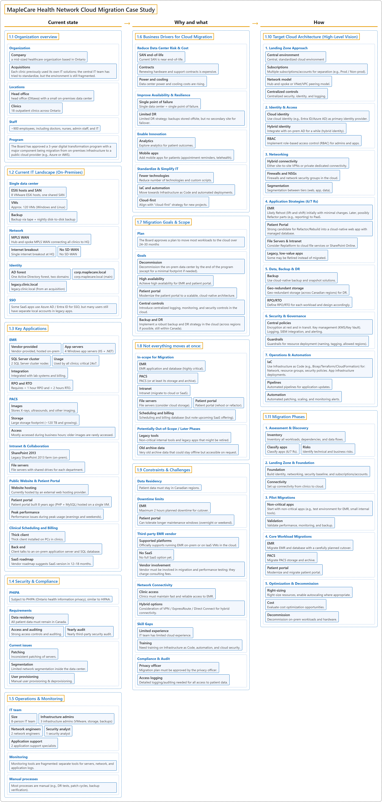

CST8913 Oral Exam: MapleCare Case

1. MapleCare Health Network Cloud Migration Case Study
1.1 Organization overview
MapleCare Health Network (MCHN) is a mid-sized healthcare organization based in Ontario, operating:
- head office (Ottawa) with a small on-premises data center
- 18 outpatient clinics across Ontario
- ~900 employees, including doctors, nurses, admin staff, and IT
MapleCare has grown via acquisitions. Each clinic previously used its own IT solutions; the central IT team has tried to standardize, but the environment is still fragmented.
The Board has approved a 3-year digital transformation program with a major component being migration from on-premises infrastructure to a public cloud provider (e.g., Azure or AWS).
MapleCare 医疗网络（MCHN）是一家位于安大略省的中型医疗机构，运营着：
- 总部（渥太华），有一个小型本地数据中心
- 18 家门诊诊所，分布在安大略省各地
- 约 900 名员工，包括医生、护士、行政人员和 IT 人员
MapleCare 靠收购扩张。每家诊所以前各用各的 IT 方案；中央 IT 团队试过统一，但环境仍然碎片化。
董事会批准了一个 3 年的数字化转型计划，主要组成部分是从本地基础设施迁到公有云服务商（例如 Azure 或 AWS）。
| Category | Keyword | Description | 中文翻译 | 缩写 |
|---|---|---|---|---|
| Organization | Company | MapleCare Health Network (MCHN) is a mid-sized healthcare organization based in Ontario | MapleCare 医疗网络（MCHN）是一家位于安大略省的中型医疗机构。 | MCHN 即 MapleCare Health Network，MapleCare 医疗网络。 |
| Acquisitions | MapleCare has grown via acquisitions. Each clinic previously used its own IT solutions; the central IT team has tried to standardize, but the environment is still fragmented. | MapleCare 靠收购扩张。每家诊所以前各用各的 IT 方案；中央 IT 团队试过统一，但环境仍然碎片化。 | IT 即 information technology，信息技术。 | |
| Locations | Head office | head office (Ottawa) with a small on-premises data center | 总部在渥太华，有一个小型本地数据中心。 | |
| Clinics | 18 outpatient clinics across Ontario | 18 家门诊诊所，分布在安大略省各地。 | ||
| Staff | ~900 employees, including doctors, nurses, admin staff, and IT | 约 900 名员工，包括医生、护士、行政人员和 IT 人员。 | IT 即 information technology，信息技术。 | |
| Program | The Board has approved a 3-year digital transformation program with a major component being migration from on-premises infrastructure to a public cloud provider (e.g., Azure or AWS). | 董事会批准了一个 3 年的数字化转型计划，主要组成部分是从本地基础设施迁到公有云服务商（例如 Azure 或 AWS）。 | AWS 即 Amazon Web Services，亚马逊云服务。 |
1.2 Current IT Landscape (On-Premises)
- Data Center & Infrastructure
- Single data center at head office:
- 8 VMware ESXi hosts, one shared SAN
- Approx. 120 VMs (Windows and Linux)
- Backup via tape + nightly disk-to-disk backup
- Network:
- Hub-and-spoke MPLS WAN connecting all clinics to HQ
- Single internet breakout at HQ
- No SD-WAN
- Identity:
- One Active Directory forest, two domains:
- corp.maplecare.local (main)
- legacy.clinic.local (from an acquisition)
- Some SaaS apps use Azure AD / Entra ID for SSO, but many users still have separate local accounts in legacy apps.
- 数据中心和基础设施
- 总部只有一个数据中心：
- 8 台 VMware ESXi 主机，一个共享 SAN
- 约 120 台虚拟机（Windows 和 Linux）
- 备份用磁带，加上每晚磁盘到磁盘的备份
- 网络：
- 中心辐射型 MPLS 广域网，把所有诊所连到总部
- 总部只有一个互联网出口
- 没有 SD-WAN
- 身份：
- 一个 Active Directory 林，下面两个域：
- corp.maplecare.local（主域）
- legacy.clinic.local（来自一次收购）
- 一些 SaaS 应用用 Azure AD 或 Entra ID 做单点登录，但很多用户在老旧应用里仍然有各自的本地账号。
- 总部只有一个数据中心：
1.2.1 Data Center & Infrastructure
| Category | Keyword | Description | 中文翻译 | 缩写 |
|---|---|---|---|---|
| Single data center | ESXi hosts and SAN | Single data center at head office: 8 VMware ESXi hosts, one shared SAN | 总部只有一个数据中心：8 台 VMware ESXi 主机，一个共享 SAN。 | ESXi 是 VMware 的虚拟化主机系统。 SAN 即 Storage Area Network，存储区域网络。 |
| VMs | Approx. 120 VMs (Windows and Linux) | 约 120 台虚拟机，有 Windows 也有 Linux。 | VM 即 virtual machine，虚拟机。 | |
| Backup | Backup via tape + nightly disk-to-disk backup | 备份用磁带，加上每晚磁盘到磁盘的备份。 | ||
| Network | MPLS WAN | Hub-and-spoke MPLS WAN connecting all clinics to HQ | 中心辐射型 MPLS 广域网把所有诊所连到总部。 | MPLS 即 Multiprotocol Label Switching，多协议标签交换。 WAN 即 wide area network，广域网。 HQ 即 headquarters，总部。 |
| Internet breakout | Single internet breakout at HQ | 只有一个互联网出口，在总部。 | HQ 即 headquarters，总部。 | |
| No SD-WAN | No SD-WAN | 没有 SD-WAN。 | SD-WAN 即 Software-Defined Wide Area Network，软件定义广域网。 | |
| Identity | AD forest | One Active Directory forest, two domains: | 一个 Active Directory 林，下面有两个域： | AD 即 Active Directory，活动目录。 林是它最大的管理边界。 |
| corp.maplecare.local | corp.maplecare.local (main) | corp.maplecare.local，主域。 | ||
| legacy.clinic.local | legacy.clinic.local (from an acquisition) | legacy.clinic.local，来自一次收购。 | ||
| SSO | Some SaaS apps use Azure AD / Entra ID for SSO, but many users still have separate local accounts in legacy apps. | 一些 SaaS 应用用 Azure AD 或 Entra ID 做单点登录，但很多用户在老旧应用里仍然有各自的本地账号。 | SaaS 即 Software as a Service，软件即服务。 AD 即 Active Directory，活动目录。 Azure AD 是 Entra ID 的旧名。 SSO 即 single sign-on，单点登录。 |
1.3 Key Applications
- Electronic Medical Record (EMR) System
- Vendor-provided, hosted on-prem:
- 4 Windows app servers (IIS + .NET)
- 2 SQL Server cluster nodes
- Used by all clinics; critical 24x7.
- Integrated with lab systems and billing.
- Requires < 1 hour RPO and < 2 hours RTO.
- PACS (Imaging System)
- Stores X-rays, ultrasounds, and other imaging.
- Large storage footprint (~120 TB and growing).
- Mostly accessed during business hours; older images are rarely accessed.
- Intranet & Collaboration
- Legacy SharePoint 2013 farm (on-prem).
- File servers with shared drives for each department.
- Public Website & Patient Portal
- Currently hosted by an external web hosting provider.
- Patient portal built 8 years ago (PHP + MySQL) hosted on a single VM.
- Performance issues during peak usage (evenings and weekends).
- Clinical Scheduling and Billing System
- Thick client installed on PCs in clinics.
- Client talks to an on-prem application server and SQL database.
- Vendor roadmap suggests SaaS version in 12–18 months.
- 电子病历（EMR）系统
- 厂商提供，部署在本地：
- 4 台 Windows 应用服务器（IIS 加 .NET）
- 2 个 SQL Server 集群节点
- 所有诊所都在用；全天候关键。
- 和化验系统以及计费系统集成。
- 要求 RPO 小于 1 小时，RTO 小于 2 小时。
- 厂商提供，部署在本地：
- PACS（影像系统）
- 存放 X 光、超声和其他影像。
- 存储量很大（约 120 TB，还在增长）。
- 主要在工作时间访问；旧影像很少被访问。
- 内网和协作
- 老旧的 SharePoint 2013 服务器场（部署在本地）。
- 文件服务器，每个部门一个共享盘。
- 公共网站和患者门户
- 目前托管在外部的网站托管商。
- 患者门户是 8 年前建的（PHP 加 MySQL），跑在一台虚拟机上。
- 高峰时段（晚上和周末）有性能问题。
- 诊所排班和计费系统
- 胖客户端装在诊所的电脑上。
- 客户端连接本地的应用服务器和 SQL 数据库。
- 厂商的路线图显示 12 到 18 个月后会有 SaaS 版本。
1.3.1 Electronic Medical Record (EMR) System
| Category | Keyword | Description | 中文翻译 | 缩写 |
|---|---|---|---|---|
| Hosting | Vendor-provided | Vendor-provided, hosted on-prem: | 厂商提供，部署在本地： | EMR 即 Electronic Medical Record，电子病历。 |
| App servers | 4 Windows app servers (IIS + .NET) | 4 台 Windows 应用服务器（IIS 加 .NET）。 | IIS 即 Internet Information Services，微软的 Web 服务器。 | |
| SQL Server cluster | 2 SQL Server cluster nodes | 2 个 SQL Server 集群节点。 | SQL 即 Structured Query Language，结构化查询语言。 | |
| Usage | Used by all clinics; critical 24x7. | 所有诊所都在用；全天候关键。 | ||
| Integration | Integrated with lab systems and billing. | 和化验系统以及计费系统集成。 | ||
| RPO and RTO | Requires < 1 hour RPO and < 2 hours RTO. | 要求 RPO 小于 1 小时，RTO 小于 2 小时。 | RPO 即 recovery point objective，恢复点目标。 RTO 即 recovery time objective，恢复时间目标。 |
1.3.2 PACS (Imaging System)
| Category | Keyword | Description | 中文翻译 | 缩写 |
|---|---|---|---|---|
| Images | Stores X-rays, ultrasounds, and other imaging. | 存放 X 光、超声和其他影像。 | PACS 即 Picture Archiving and Communication System，医学影像存储与传输系统。 | |
| Storage | Large storage footprint (~120 TB and growing). | 存储量很大，约 120 TB，还在增长。 | TB 即 terabyte，太字节。 | |
| Access | Mostly accessed during business hours; older images are rarely accessed. | 主要在工作时间访问；旧影像很少被访问。 |
1.3.3 Intranet & Collaboration
| Category | Keyword | Description | 中文翻译 | 缩写 |
|---|---|---|---|---|
| SharePoint 2013 | Legacy SharePoint 2013 farm (on-prem). | 老旧的 SharePoint 2013 服务器场，部署在本地。 | ||
| File servers | File servers with shared drives for each department. | 文件服务器，每个部门一个共享盘。 |
1.3.4 Public Website & Patient Portal
| Category | Keyword | Description | 中文翻译 | 缩写 |
|---|---|---|---|---|
| Website hosting | Currently hosted by an external web hosting provider. | 目前托管在外部的网站托管商。 | ||
| Patient portal | Patient portal built 8 years ago (PHP + MySQL) hosted on a single VM. | 患者门户是 8 年前建的（PHP 加 MySQL），跑在一台虚拟机上。 | PHP 即 PHP: Hypertext Preprocessor，一种 Web 编程语言。 VM 即 virtual machine，虚拟机。 |
|
| Peak performance | Performance issues during peak usage (evenings and weekends). | 高峰时段（晚上和周末）有性能问题。 |
1.3.5 Clinical Scheduling and Billing System
| Category | Keyword | Description | 中文翻译 | 缩写 |
|---|---|---|---|---|
| Thick client | Thick client installed on PCs in clinics. | 胖客户端装在诊所的电脑上。 | PC 即 personal computer，个人电脑。 | |
| Back end | Client talks to an on-prem application server and SQL database. | 客户端连接本地的应用服务器和 SQL 数据库。 | SQL 即 Structured Query Language，结构化查询语言。 | |
| SaaS roadmap | Vendor roadmap suggests SaaS version in 12–18 months. | 厂商的路线图显示 12 到 18 个月后会有 SaaS 版本。 | SaaS 即 Software as a Service，软件即服务。 |
1.4 Security & Compliance
- Subject to PHIPA (Ontario health information privacy), similar to HIPAA.
- Requirements:
- All patient data must remain in Canada.
- Strong access controls and auditing.
- Yearly third-party security audit.
- Current issues:
- Inconsistent patching of servers.
- Limited network segmentation inside the data center.
- Manual user provisioning & deprovisioning.
- 受 PHIPA（安大略省的健康信息隐私法）约束，类似美国的 HIPAA。
- 要求：
- 所有病人数据必须留在加拿大。
- 严格的访问控制和审计。
- 每年一次第三方安全审计。
- 现存问题：
- 服务器补丁不一致。
- 数据中心内部网络分段不够。
- 手工开通和注销用户账号。
| Category | Keyword | Description | 中文翻译 | 缩写 |
|---|---|---|---|---|
| PHIPA | Subject to PHIPA (Ontario health information privacy), similar to HIPAA. | 受 PHIPA（安大略省的健康信息隐私法）约束，类似美国的 HIPAA。 | PHIPA 即 Personal Health Information Protection Act，个人健康信息保护法。 HIPAA 即 Health Insurance Portability and Accountability Act，美国的健康保险流通与责任法案。 |
|
| Requirements | Data residency | All patient data must remain in Canada. | 所有病人数据必须留在加拿大。 | |
| Access and auditing | Strong access controls and auditing. | 严格的访问控制和审计。 | ||
| Yearly audit | Yearly third-party security audit. | 每年一次第三方安全审计。 | ||
| Current issues | Patching | Inconsistent patching of servers. | 服务器补丁不一致。 | |
| Segmentation | Limited network segmentation inside the data center. | 数据中心内部网络分段不够。 | ||
| User provisioning | Manual user provisioning & deprovisioning. | 手工开通和注销用户账号。 |
1.5 Operations & Monitoring
- 8-person IT team:
- 3 infrastructure admins (VMware, storage, backups)
- 2 network engineers
- 1 security analyst
- 2 application support specialists
- Monitoring tools are fragmented: separate tools for servers, network, and application logs.
- Most processes are manual (e.g., DR tests, patch cycles, backup verification).
- IT 团队共 8 人：
- 3 名基础设施管理员（VMware、存储、备份）
- 2 名网络工程师
- 1 名安全分析员
- 2 名应用支持专员
- 监控工具分散：服务器、网络和应用日志各用各的工具。
- 大部分流程靠手工（例如灾备演练、打补丁、备份验证）。
| Category | Keyword | Description | 中文翻译 | 缩写 |
|---|---|---|---|---|
| IT team | Size | 8-person IT team: | IT 团队共 8 人： | IT 即 information technology，信息技术。 |
| Infrastructure admins | 3 infrastructure admins (VMware, storage, backups) | 3 名基础设施管理员，负责 VMware、存储和备份。 | ||
| Network engineers | 2 network engineers | 2 名网络工程师。 | ||
| Security analyst | 1 security analyst | 1 名安全分析员。 | ||
| Application support | 2 application support specialists | 2 名应用支持专员。 | ||
| Monitoring | Monitoring tools are fragmented: separate tools for servers, network, and application logs. | 监控工具分散：服务器、网络和应用日志各用各的工具。 | ||
| Manual processes | Most processes are manual (e.g., DR tests, patch cycles, backup verification). | 大部分流程靠手工（例如灾备演练、打补丁、备份验证）。 | DR 即 disaster recovery，灾难恢复。 |
1.6 Business Drivers for Cloud Migration
The Executive team wants to:
- Reduce Data Center Risk & Cost
- Current SAN is near end-of-life.
- Renewing hardware and support contracts is expensive.
- Data center power and cooling costs are rising.
- Improve Availability & Resilience
- Single data center = single point of failure.
- Limited DR strategy: backups stored offsite, but no secondary site for failover.
- Enable Innovation
- Explore analytics for patient outcomes.
- Add mobile apps for patients (appointment reminders, telehealth).
- Standardize & Simplify IT
- Reduce number of technologies and custom scripts.
- Move towards Infrastructure as Code and automated deployments.
- Align with “cloud-first” strategy for new projects.
管理层希望：
- 降低数据中心的风险和成本
- 现有的 SAN 快到使用寿命了。
- 续签硬件和支持合同的费用很高。
- 数据中心的电费和制冷费在上涨。
- 提高可用性和韧性
- 只有一个数据中心，就是单点故障。
- 灾备方案有限：备份存放在异地，但没有可以故障转移的备用站点。
- 推动创新
- 探索用数据分析改善患者的治疗结果。
- 为患者开发手机应用（预约提醒、远程医疗）。
- 让 IT 标准化、简单化
- 减少技术种类和自定义脚本。
- 转向基础设施即代码和自动化部署。
- 新项目遵循“云优先”策略。
| Category | Keyword | Description | 中文翻译 | 缩写 |
|---|---|---|---|---|
| Executive team | The Executive team wants to: | 管理层希望： | ||
| Reduce Data Center Risk & Cost | SAN end-of-life | Current SAN is near end-of-life. | 现有的 SAN 快到使用寿命了。 | SAN 即 Storage Area Network，存储区域网络。 |
| Contracts | Renewing hardware and support contracts is expensive. | 续签硬件和支持合同的费用很高。 | ||
| Power and cooling | Data center power and cooling costs are rising. | 数据中心的电费和制冷费在上涨。 | ||
| Improve Availability & Resilience | Single point of failure | Single data center = single point of failure. | 只有一个数据中心，就是单点故障。 | |
| Limited DR | Limited DR strategy: backups stored offsite, but no secondary site for failover. | 灾备方案有限：备份存放在异地，但没有可以故障转移的备用站点。 | DR 即 disaster recovery，灾难恢复。 | |
| Enable Innovation | Analytics | Explore analytics for patient outcomes. | 探索用数据分析改善患者治疗结果。 | |
| Mobile apps | Add mobile apps for patients (appointment reminders, telehealth). | 为患者开发手机应用（预约提醒、远程医疗）。 | ||
| Standardize & Simplify IT | Fewer technologies | Reduce number of technologies and custom scripts. | 减少技术种类和自定义脚本。 | IT 即 information technology，信息技术。 |
| IaC and automation | Move towards Infrastructure as Code and automated deployments. | 转向基础设施即代码和自动化部署。 | ||
| Cloud-first | Align with “cloud-first” strategy for new projects. | 新项目遵循云优先策略。 |
1.7 Migration Goals & Scope
The Board approves a plan to move most workloads to the cloud over 24–30 months, with the following goals:
- Decommission the on-prem data center by the end of the program (except for a minimal footprint if needed).
- Achieve high availability for EMR and patient portal.
- Modernize the patient portal to a scalable, cloud-native architecture.
- Introduce centralized logging, monitoring, and security controls in the cloud.
- Implement a robust backup and DR strategy in the cloud (across regions if possible, still within Canada).
董事会批准了一个计划：在 24 到 30 个月内把大部分工作负载迁到云上，目标如下：
- 计划结束时关闭本地数据中心（必要时保留最小规模）。
- EMR 和患者门户实现高可用。
- 把患者门户现代化，改成可扩展的云原生架构。
- 在云上建立集中的日志、监控和安全控制。
- 在云上实施可靠的备份和灾备方案（尽量跨区域，但仍在加拿大境内）。
| Category | Keyword | Description | 中文翻译 | 缩写 |
|---|---|---|---|---|
| Plan | The Board approves a plan to move most workloads to the cloud over 24–30 months, with the following goals: | 董事会批准了一个计划：在 24 到 30 个月内把大部分工作负载迁到云上，目标如下： | ||
| Goals | Decommission | Decommission the on-prem data center by the end of the program (except for a minimal footprint if needed). | 计划结束时关闭本地数据中心（必要时保留最小规模）。 | |
| High availability | Achieve high availability for EMR and patient portal. | EMR 和患者门户实现高可用。 | EMR 即 Electronic Medical Record，电子病历。 | |
| Patient portal | Modernize the patient portal to a scalable, cloud-native architecture. | 把患者门户现代化，改成可扩展的云原生架构。 | ||
| Central controls | Introduce centralized logging, monitoring, and security controls in the cloud. | 在云上建立集中的日志、监控和安全控制。 | ||
| Backup and DR | Implement a robust backup and DR strategy in the cloud (across regions if possible, still within Canada). | 在云上实施可靠的备份和灾备方案（尽量跨区域，但仍在加拿大境内）。 | DR 即 disaster recovery，灾难恢复。 |
1.8 Not everything moves at once:
- In-scope for Migration
- EMR application and database (highly critical).
- PACS (or at least its storage and archive).
- Intranet (migrate to cloud or SaaS).
- File servers (consider cloud storage).
- Patient portal (rehost or refactor).
- Scheduling and billing database (but note upcoming SaaS offering).
- Potentially Out-of-Scope / Later Phases
- Non-critical internal tools and legacy apps that might be retired.
- Very old archive data that could stay offline but accessible on request.
- 在迁移范围内
- EMR 应用和数据库（非常关键）。
- PACS（至少要迁它的存储和归档）。
- 内网（迁到云上或换成 SaaS）。
- 文件服务器（考虑云存储）。
- 患者门户（重新托管或重构）。
- 排班和计费数据库（但要注意即将推出的 SaaS 版）。
- 可能不在范围内或放到后期
- 非关键的内部工具和老旧应用，可能直接退役。
- 很老的归档数据可以保持离线，需要时再调取。
| Category | Keyword | Description | 中文翻译 | 缩写 |
|---|---|---|---|---|
| In-scope for Migration | EMR | EMR application and database (highly critical). | EMR 应用和数据库（非常关键）。 | EMR 即 Electronic Medical Record，电子病历。 |
| PACS | PACS (or at least its storage and archive). | PACS（至少要迁它的存储和归档）。 | PACS 即 Picture Archiving and Communication System，医学影像存储与传输系统。 | |
| Intranet | Intranet (migrate to cloud or SaaS). | 内网（迁到云上或换成 SaaS）。 | SaaS 即 Software as a Service，软件即服务。 | |
| File servers | File servers (consider cloud storage). | 文件服务器（考虑云存储）。 | ||
| Patient portal | Patient portal (rehost or refactor). | 患者门户（重新托管或重构）。 | ||
| Scheduling and billing | Scheduling and billing database (but note upcoming SaaS offering). | 排班和计费数据库（但要注意即将推出的 SaaS 版）。 | SaaS 即 Software as a Service，软件即服务。 | |
| Potentially Out-of-Scope / Later Phases | Legacy tools | Non-critical internal tools and legacy apps that might be retired. | 非关键的内部工具和老旧应用，可能直接退役。 | |
| Old archive data | Very old archive data that could stay offline but accessible on request. | 很老的归档数据可以保持离线，需要时再调取。 |
1.9 Constraints & Challenges
- Data Residency: Patient data must stay in Canadian regions.
- Downtime limits:
- EMR: Maximum 2 hours planned downtime for cutover.
- Patient portal: Can tolerate longer maintenance windows (overnight or weekend).
- Third-party EMR vendor:
- Officially supports running EMR on-prem or on IaaS VMs in the cloud.
- No full SaaS option yet.
- Vendor must be involved in migration and performance testing; they charge consulting fees.
- Network Connectivity:
- Clinics must maintain fast and reliable access to EMR.
- Consideration of VPN / ExpressRoute / Direct Connect for hybrid connectivity.
- Skill Gaps:
- IT team has limited cloud experience.
- Need training on Infrastructure as Code, automation, and cloud security.
- Compliance & Audit:
- Migration plan must be approved by the privacy officer.
- Detailed logging/auditing needed for all access to patient data.
- 数据驻留：病人数据必须留在加拿大的区域。
- 停机限制：
- EMR：切换时计划停机最多 2 小时。
- 患者门户：可以接受更长的维护窗口（夜间或周末）。
- 第三方 EMR 厂商：
- 官方支持把 EMR 跑在本地，或者云上的 IaaS 虚拟机里。
- 目前还没有完整的 SaaS 版本。
- 厂商必须参与迁移和性能测试；他们收咨询费。
- 网络连接：
- 诊所必须保持快速、可靠地访问 EMR。
- 考虑用 VPN、ExpressRoute 或 Direct Connect 实现混合连接。
- 技能缺口：
- IT 团队的云经验有限。
- 需要培训基础设施即代码、自动化和云安全。
- 合规和审计：
- 迁移计划必须经隐私官批准。
- 所有对病人数据的访问都需要详细的日志和审计。
| Category | Keyword | Description | 中文翻译 | 缩写 |
|---|---|---|---|---|
| Data Residency | Data Residency: Patient data must stay in Canadian regions. | 数据驻留：病人数据必须留在加拿大区域。 | ||
| Downtime limits | EMR | EMR: Maximum 2 hours planned downtime for cutover. | EMR：切换时计划停机最多 2 小时。 | EMR 即 Electronic Medical Record，电子病历。 |
| Patient portal | Patient portal: Can tolerate longer maintenance windows (overnight or weekend). | 患者门户：可以接受更长的维护窗口（夜间或周末）。 | ||
| Third-party EMR vendor | Supported platforms | Officially supports running EMR on-prem or on IaaS VMs in the cloud. | 官方支持把 EMR 跑在本地，或者云上的 IaaS 虚拟机里。 | EMR 即 Electronic Medical Record，电子病历。 IaaS 即 Infrastructure as a Service，基础设施即服务。 VM 即 virtual machine，虚拟机。 |
| No SaaS | No full SaaS option yet. | 目前还没有完整的 SaaS 版本。 | SaaS 即 Software as a Service，软件即服务。 | |
| Vendor involvement | Vendor must be involved in migration and performance testing; they charge consulting fees. | 厂商必须参与迁移和性能测试；他们收咨询费。 | ||
| Network Connectivity | Clinic access | Clinics must maintain fast and reliable access to EMR. | 诊所必须保持快速、可靠地访问 EMR。 | EMR 即 Electronic Medical Record，电子病历。 |
| Hybrid options | Consideration of VPN / ExpressRoute / Direct Connect for hybrid connectivity. | 考虑用 VPN、ExpressRoute 或 Direct Connect 实现混合连接。 | VPN 即 virtual private network，虚拟专用网络。 ExpressRoute 是 Azure 的专线，Direct Connect 是 AWS 的专线。 |
|
| Skill Gaps | Limited experience | IT team has limited cloud experience. | IT 团队的云经验有限。 | IT 即 information technology，信息技术。 |
| Training | Need training on Infrastructure as Code, automation, and cloud security. | 需要培训基础设施即代码、自动化和云安全。 | ||
| Compliance & Audit | Privacy officer | Migration plan must be approved by the privacy officer. | 迁移计划必须经隐私官批准。 | |
| Access logging | Detailed logging/auditing needed for all access to patient data. | 所有对病人数据的访问都需要详细的日志和审计。 |
1.10 Target Cloud Architecture (High-Level Vision)
Executives expect the solution to follow:
- Landing Zone Approach
- Central, standardized cloud environment with:
- Multiple subscriptions/accounts for separation (e.g., Prod / Non-prod).
- Hub-and-spoke or VNet/VPC peering model.
- Centralized security, identity, and logging.
- Identity & Access
- Use cloud identity (e.g., Entra ID/Azure AD) as primary identity provider.
- Integrate with on-prem AD for a while (hybrid identity).
- Implement role-based access control (RBAC) for admins and apps.
- Networking
- Hybrid connectivity from clinics to cloud:
- Either site-to-site VPNs or private dedicated connectivity.
- Firewalls and network security groups in the cloud.
- Segmentation between tiers (web, app, data).
- Application Strategies (6/7 Rs)
- EMR:
- Likely Rehost (lift-and-shift) initially with minimal changes.
- Later, possibly Refactor parts (e.g., reporting) to PaaS.
- Patient Portal:
- Strong candidate for Refactor/Rebuild into a cloud-native web app with managed database.
- File Servers & Intranet:
- Consider Replatform to cloud file services or SharePoint Online.
- Legacy, low-value apps:
- Some may be Retired instead of migrated.
- Data, Backup & DR
- Use cloud-native backup and snapshot solutions.
- Geo-redundant storage (across Canadian regions) for DR.
- Define RPO/RTO for each workload and design accordingly.
- Security & Governance
- Central policies for:
- Encryption at rest and in transit.
- Key management (KMS/Key Vault).
- Logging, SIEM integration, and alerting.
- Guardrails for resource deployment (naming, tagging, allowed regions).
- Operations & Automation
- Use Infrastructure as Code (e.g., Bicep/Terraform/CloudFormation) for:
- Network, resource groups, security policies.
- App infrastructure deployments.
- Automated pipelines for application updates.
- Automated patching, scaling, and monitoring alerts.
管理层期望方案遵循：
- 着陆区方式
- 集中、标准化的云环境，包含：
- 多个订阅或账户做隔离（例如生产和非生产分开）。
- 中心辐射型，或者 VNet 或 VPC 对等互连模型。
- 集中的安全、身份和日志。
- 集中、标准化的云环境，包含：
- 身份和访问
- 用云身份（例如 Entra ID，原名 Azure AD）作为主要的身份提供方。
- 一段时间内和本地 AD 集成（混合身份）。
- 对管理员和应用实施基于角色的访问控制（RBAC）。
- 网络
- 诊所到云的混合连接：
- 用站点到站点 VPN，或者私有专线。
- 云上的防火墙和网络安全组。
- 各层之间分段隔离（Web 层、应用层、数据层）。
- 诊所到云的混合连接：
- 应用策略（6 或 7 个 R）
- EMR：
- 一开始大概率重新托管（直接搬迁），改动最少。
- 以后可能把部分功能（例如报表）重构到 PaaS。
- 患者门户：
- 很适合重构或重建成云原生 Web 应用，配托管数据库。
- 文件服务器和内网：
- 考虑换平台到云文件服务或 SharePoint Online。
- 老旧、低价值的应用：
- 有些可能直接退役，不迁移。
- EMR：
- 数据、备份和灾备
- 用云原生的备份和快照方案。
- 用异地冗余存储（跨加拿大的区域）做灾备。
- 为每个工作负载定义 RPO 和 RTO，并据此设计。
- 安全和治理
- 集中策略，覆盖：
- 静态加密和传输加密。
- 密钥管理（KMS 或 Key Vault）。
- 日志、接入 SIEM 和告警。
- 资源部署的护栏（命名、标签、允许的区域）。
- 集中策略，覆盖：
- 运维和自动化
- 用基础设施即代码（例如 Bicep、Terraform 或 CloudFormation）管理：
- 网络、资源组、安全策略。
- 应用基础设施的部署。
- 用自动化管道做应用更新。
- 自动打补丁、自动扩缩和监控告警。
- 用基础设施即代码（例如 Bicep、Terraform 或 CloudFormation）管理：
| Category | Keyword | Description | 中文翻译 | 缩写 |
|---|---|---|---|---|
| Executives | Executives expect the solution to follow: | 管理层期望方案遵循： |
1.10.1 Landing Zone Approach
| Category | Keyword | Description | 中文翻译 | 缩写 |
|---|---|---|---|---|
| Landing zone | Central environment | Central, standardized cloud environment with: | 集中、标准化的云环境，包含： | |
| Subscriptions | Multiple subscriptions/accounts for separation (e.g., Prod / Non-prod). | 多个订阅或账户做隔离（例如生产和非生产分开）。 | Prod 即 production，生产环境。 Non-prod 即 non-production，非生产环境。 |
|
| Network model | Hub-and-spoke or VNet/VPC peering model. | 中心辐射型或 VNet 或 VPC 对等互连模型。 | VNet 即 virtual network，虚拟网络。 VPC 即 Virtual Private Cloud，AWS 的虚拟私有云。 |
|
| Centralized controls | Centralized security, identity, and logging. | 集中的安全、身份和日志。 |
1.10.2 Identity & Access
| Category | Keyword | Description | 中文翻译 | 缩写 |
|---|---|---|---|---|
| Identity | Cloud identity | Use cloud identity (e.g., Entra ID/Azure AD) as primary identity provider. | 用云身份（例如 Entra ID，原名 Azure AD）作为主要的身份提供方。 | AD 即 Active Directory，活动目录。 Azure AD 是 Entra ID 的旧名。 |
| Hybrid identity | Integrate with on-prem AD for a while (hybrid identity). | 一段时间内和本地 AD 集成（混合身份）。 | AD 即 Active Directory，活动目录。 | |
| Access | RBAC | Implement role-based access control (RBAC) for admins and apps. | 对管理员和应用实施基于角色的访问控制。 | RBAC 即 role-based access control，基于角色的访问控制。 |
1.10.3 Networking
| Category | Keyword | Description | 中文翻译 | 缩写 |
|---|---|---|---|---|
| Connectivity | Hybrid connectivity | Hybrid connectivity from clinics to cloud: Either site-to-site VPNs or private dedicated connectivity. | 诊所到云的混合连接：用站点到站点 VPN，或者私有专线。 | VPN 即 virtual private network，虚拟专用网络。 |
| Security | Firewalls and NSGs | Firewalls and network security groups in the cloud. | 云上的防火墙和网络安全组。 | NSG 即 network security group，网络安全组。 |
| Segmentation | Segmentation between tiers (web, app, data). | 各层之间分段隔离（Web 层、应用层、数据层）。 |
1.10.4 Application Strategies (6/7 Rs)
| Category | Keyword | Description | 中文翻译 | 缩写 |
|---|---|---|---|---|
| EMR | Rehost | Likely Rehost (lift-and-shift) initially with minimal changes. | 一开始大概率重新托管（直接搬迁），改动最少。 | EMR 即 Electronic Medical Record，电子病历。 |
| Refactor | Later, possibly Refactor parts (e.g., reporting) to PaaS. | 以后可能把部分功能（例如报表）重构到 PaaS。 | PaaS 即 Platform as a Service，平台即服务。 | |
| Patient Portal | Refactor/Rebuild | Strong candidate for Refactor/Rebuild into a cloud-native web app with managed database. | 很适合重构或重建成云原生 Web 应用，配托管数据库。 | |
| File Servers & Intranet | Replatform | Consider Replatform to cloud file services or SharePoint Online. | 考虑换平台到云文件服务或 SharePoint Online。 | |
| Legacy, low-value apps | Retire | Some may be Retired instead of migrated. | 有些可能直接退役，不迁移。 |
1.10.5 Data, Backup & DR
| Category | Keyword | Description | 中文翻译 | 缩写 |
|---|---|---|---|---|
| Backup | Use cloud-native backup and snapshot solutions. | 用云原生的备份和快照方案。 | ||
| Geo-redundant storage | Geo-redundant storage (across Canadian regions) for DR. | 用异地冗余存储（跨加拿大的区域）做灾备。 | DR 即 disaster recovery，灾难恢复。 | |
| RPO/RTO | Define RPO/RTO for each workload and design accordingly. | 为每个工作负载定义 RPO 和 RTO，并据此设计。 | RPO 即 recovery point objective，恢复点目标。 RTO 即 recovery time objective，恢复时间目标。 |
1.10.6 Security & Governance
| Category | Keyword | Description | 中文翻译 | 缩写 |
|---|---|---|---|---|
| Central policies | Encryption | Central policies for: Encryption at rest and in transit. | 集中策略：静态加密和传输加密。 | |
| Key management | Key management (KMS/Key Vault). | 密钥管理（KMS 或 Key Vault）。 | KMS 即 Key Management Service，AWS 的密钥管理服务。 | |
| Logging | Logging, SIEM integration, and alerting. | 日志、接入 SIEM 和告警。 | SIEM 即 security information and event management，安全信息和事件管理。 | |
| Guardrails | Guardrails for resource deployment (naming, tagging, allowed regions). | 资源部署的护栏（命名、标签、允许的区域）。 |
1.10.7 Operations & Automation
| Category | Keyword | Description | 中文翻译 | 缩写 |
|---|---|---|---|---|
| IaC | Network and policies | Use Infrastructure as Code (e.g., Bicep/Terraform/CloudFormation) for: Network, resource groups, security policies. | 用基础设施即代码（例如 Bicep、Terraform 或 CloudFormation）管理：网络、资源组、安全策略。 | IaC 即 Infrastructure as Code，基础设施即代码。 |
| App infrastructure | App infrastructure deployments. | 应用基础设施的部署。 | ||
| Pipelines | Automated pipelines for application updates. | 用自动化管道做应用更新。 | ||
| Automation | Automated patching, scaling, and monitoring alerts. | 自动打补丁、自动扩缩和监控告警。 |
1.11 Migration Phases
- Assessment & Discovery
- Inventory all workloads, dependencies, and data flows.
- Classify apps (6/7 Rs).
- Identify technical and business risks.
- Landing Zone & Foundation
- Build identity, networking, security baseline, and subscriptions/accounts.
- Set up connectivity from clinics to cloud.
- Pilot Migrations
- Start with non-critical apps (e.g., test environment for EMR, small internal tools).
- Validate performance, monitoring, and backup.
- Core Workload Migrations
- Migrate EMR and database with a carefully planned cutover.
- Migrate PACS storage and archive.
- Modernize and migrate patient portal.
- Optimization & Decommission
- Right-size resources, enable autoscaling where appropriate.
- Evaluate cost optimization opportunities.
- Decommission on-prem workloads and hardware.
- 评估和发现
- 盘点所有工作负载、依赖关系和数据流。
- 给应用分类（6 或 7 个 R）。
- 找出技术风险和业务风险。
- 着陆区和基础
- 建好身份、网络、安全基线和订阅或账户。
- 建立诊所到云的连接。
- 试点迁移
- 先迁非关键应用（例如 EMR 的测试环境、小型内部工具）。
- 验证性能、监控和备份。
- 核心工作负载迁移
- 迁移 EMR 和数据库，切换要精心规划。
- 迁移 PACS 的存储和归档。
- 现代化并迁移患者门户。
- 优化和关闭
- 调整资源规格，合适的地方开自动扩缩。
- 评估成本优化的机会。
- 淘汰本地的工作负载和硬件。
1.11.1 Assessment & Discovery
| Category | Keyword | Description | 中文翻译 | 缩写 |
|---|---|---|---|---|
| Inventory | Workloads | Inventory all workloads | 盘点所有工作负载 | |
| Dependencies | dependencies | 依赖关系 | ||
| Data flows | and data flows. | 数据流 | ||
| Classify apps | Classify apps (6/7 Rs). | 按 6/7 个 R 给应用分类 | ||
| Risks | Technical | Identify technical | 技术风险 | |
| Business | and business risks. | 业务风险 |
1.11.2 Landing Zone & Foundation
| Category | Keyword | Description | 中文翻译 | 缩写 |
|---|---|---|---|---|
| Foundation | Identity | Build identity | 身份 | |
| Networking | networking | 网络 | ||
| Security baseline | security baseline | 安全基线 | ||
| Subscriptions/accounts | and subscriptions/accounts. | 订阅或账户 | ||
| Connectivity | Set up connectivity from clinics to cloud. | 诊所到云的连接 |
1.11.3 Pilot Migrations
| Category | Keyword | Description | 中文翻译 | 缩写 |
|---|---|---|---|---|
| Non-critical apps | EMR test environment | Start with non-critical apps (e.g., test environment for EMR | 先迁非关键应用：EMR 测试环境 | EMR 即 Electronic Medical Record，电子病历。 |
| Small internal tools | small internal tools). | 小型内部工具 | ||
| Validation | Performance | Validate performance | 性能 | |
| Monitoring | monitoring | 监控 | ||
| Backup | and backup. | 备份 |
1.11.4 Core Workload Migrations
| Category | Keyword | Description | 中文翻译 | 缩写 |
|---|---|---|---|---|
| EMR | Migrate EMR and database with a carefully planned cutover. | EMR 和数据库，精心规划切换 | EMR 即 Electronic Medical Record，电子病历。 | |
| PACS | Migrate PACS storage and archive. | PACS 的存储和归档 | PACS 即 Picture Archiving and Communication System，医学影像存储与传输系统。 | |
| Patient portal | Modernize and migrate patient portal. | 现代化并迁移患者门户 |
1.11.5 Optimization & Decommission
| Category | Keyword | Description | 中文翻译 | 缩写 |
|---|---|---|---|---|
| Right-sizing | Right-size | Right-size resources | 调整资源规格 | |
| Autoscaling | enable autoscaling where appropriate. | 合适的地方开自动扩缩 | ||
| Cost | Evaluate cost optimization opportunities. | 评估成本优化机会 | ||
| Decommission | Decommission on-prem workloads and hardware. | 淘汰本地工作负载和硬件 |